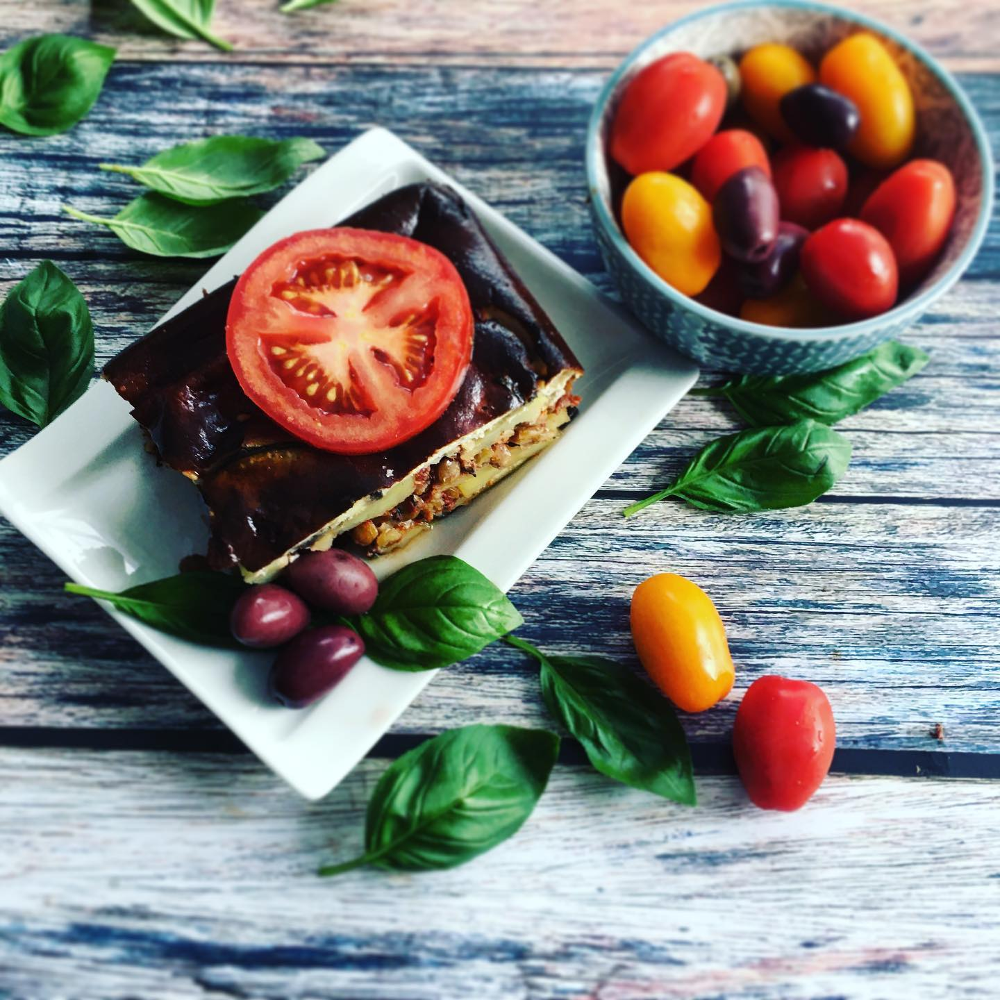

Grécka musaka podľa @izabelciunia_w_kuchni — Normy Jedál
Jestem miłośniczka greckich smaków. A #moussaka zwłaszcza. Dlatego postanowiłam pozbawić ja mięsa i lekko „odchudzić”
Tak wiec #greckamusaka #bezmięsa #wege z #soczewica i rzecz jasna #pomidory #bakłażan #ziemniaki poleca się na #obiad #lunch #lunchbox czy cokolwiek 🤪 #jedzenie #kochamgotowac #izabelciuniawkuchni #gotowaniezpasją #fitprzepisy #zdroweodżywianie #zdrowegotowanie #foodporn #food #instagood #instafood #instafoodie #cooking #cookingtime #dieta #vegetarian #nomeat #delicious #zdrowo